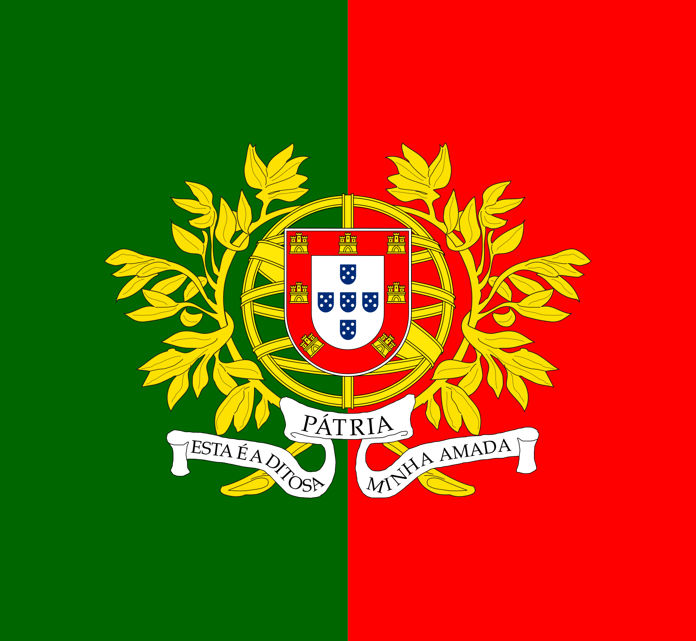
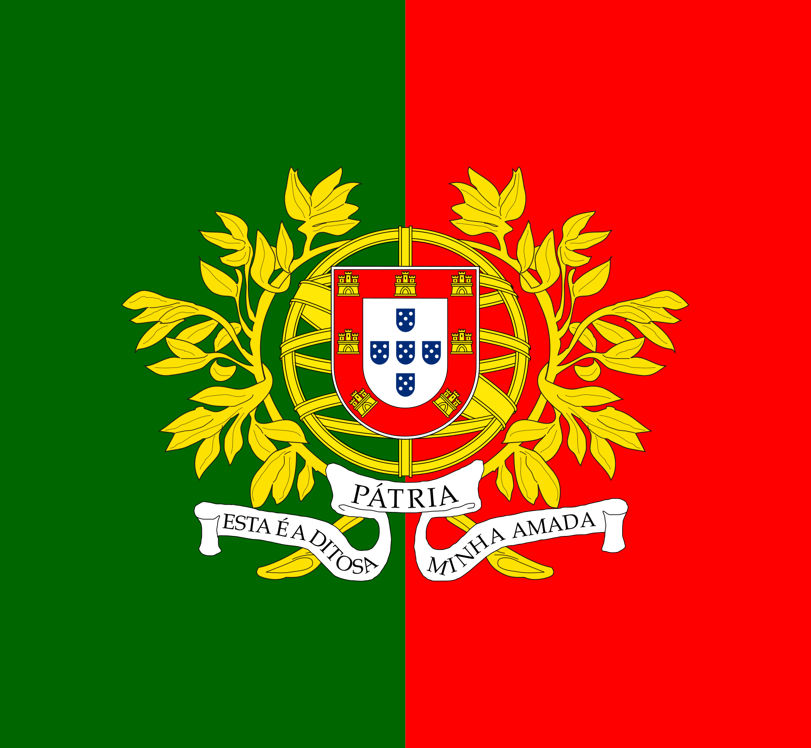
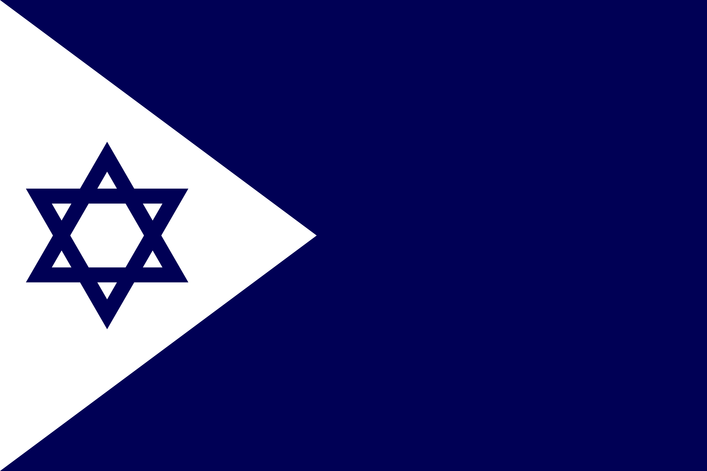
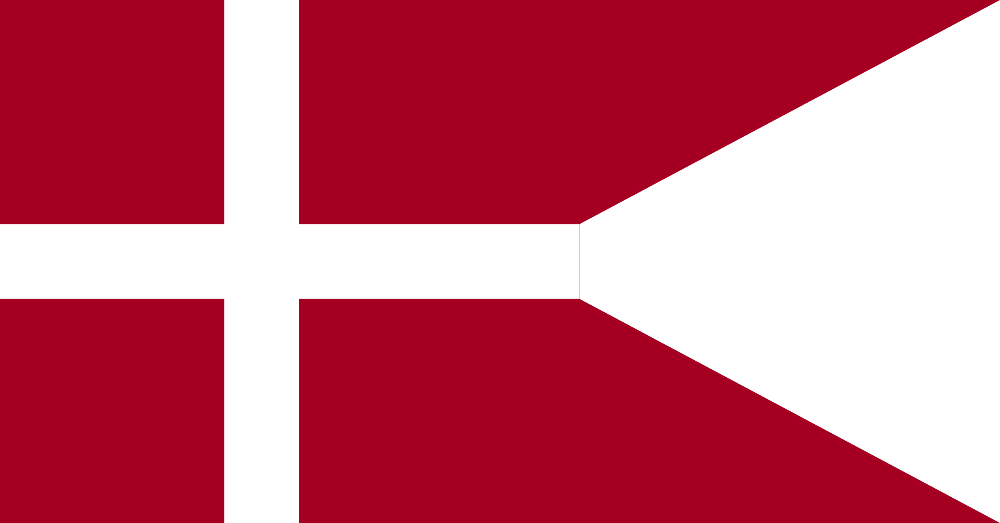

Flag Use
Flags have had alot more use other than representing a country politically with the biggest being for wartime.
Click this text to see How military flags were used
 

Click this text to see How naval ensigns were/are used


In the modern era war flags are much rarer with the use of a countries national/political flag being much more common. But naval ensigns are still common and in use in many countries.